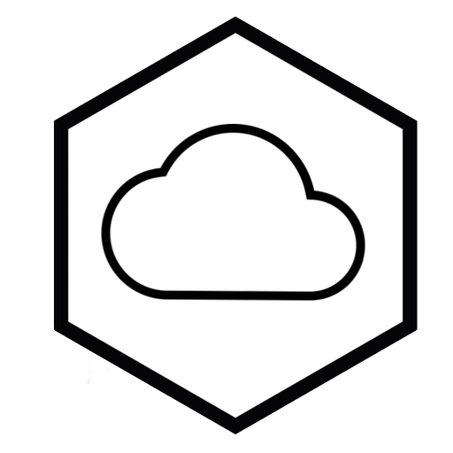
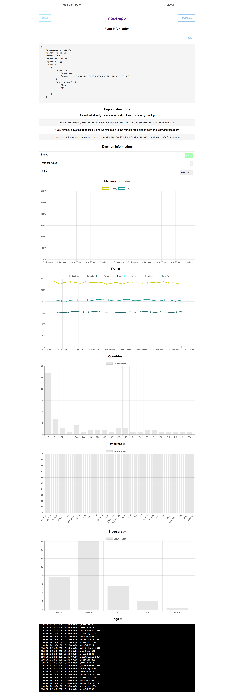

node-distribute
Welcome to your personal VPN ☁️


node-distribute is an open source SAAS application built with nodejs. It currently supports hosting static and nodejs applications.
To run node-distribute on port 80 use iptables to do the routing
sudo iptables -t nat -A PREROUTING -i eth0 -p tcp --dport 80 -j REDIRECT --to-port 1337
npm install node-distribute -g;
node-distribute start;
There are two components to node-distribute, there is a git-server and proxy-server
The default ports are; 1337 (proxy-server) and 7000 (git-server)Currently the safest way to edit the configuration files is from the physical box and in order to do this just run;
node-distribute -c [editor]
node-distribute --configure [editor]
This command will open the file config.json for editing.
This will use the default $EDITOR or $VISUALIZE or fallback to notepad or vim, depending on the platform. To open the file in atom execute node-distribute -c atom or node-distribute -c sublime for Sublime TextThe structure for this file contains repo and a user object
{
"user": {},
"repos": []
}
Once you have setup your config.json the last step is too push code. Once the server is running you will get a page that looks like the following, when navigating to http://admin.{domain}:1337
You will be prompted with a basic auth modal, the username and password is the entry for user in the config.json file

There will be a repo instructions field that shows you the remote address to push your git repo too.
Once you git push to that remote branch it will build and the UI will update when the build has deployed.
Usage: node-distribute [options]
Options:
-h, --help output usage information
-V, --version output the version number
-s, --start start node distribute
-c, --configure [editor] opens up editor to edit configuration file
-r, --regenerate-user regenerates the user in config.json
to deploy an app to the root level just simply use the `*` character in the subdomain field
[
{
...
"subdomain": "*", // location:1337
...
}
]
Hosting applications has become extremely easy. You open up some free-tier SAAS application, configure your git hooks and it builds on push. Long term useability is where it becomes an issue.
Currently node-distribute can run static web applications or nodejs applications. The open deployment pipeline aims to assist in supporting many more architectures in the future.